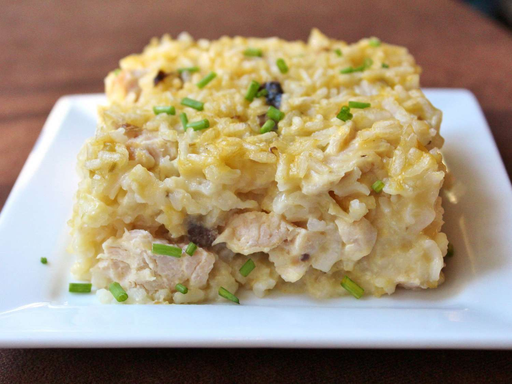

Mamaw's Chicken and Rice Casserole

Mamaw's Chicken and Rice Casserole Recipe
This affordable, simple, and delicious dish is easy to make and store.
The prep time is 10 minutes and cook time is 1 hour. Plan to spend an additional 10 minutes buffer.
This recipes yields 6 servings in a 9x13-inch casserole tray.
Ingredients:
- 3 chicken breasts, cut into cubes
- 2 cups water
- 2 cups instant white rice
- 1 (10.5 ounce) can cream of chicken soup
- 1 (10.5 ounce) can cream of celery soup
- 1 (10.5 ounce) can cream of mushroom soup
- salt and ground black pepper to taste
- 1/2 cup butter, sliced into pats
Steps:
Home